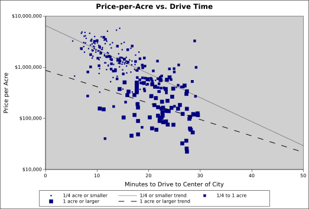

I am an economist studying the housing crisis in Austin, Texas. Other economists, like Harvard's Ed Glaeser and Penn's Joseph Gyourko, had determined that housing was expensive because bad zoning laws drive up the price of land. In 2019, I did a study of the price of land in Austin.
Laws like a minimum lot size and maximum building height make land expensive. So, I expected to see that house buyers were trying to buy as little land as possible. That is, there is more demand for smaller lots than large ones and buyers are willing to pay more per-acre for small lots.
The graph below shows the price of empty lots as you go farther from the center of Austin (6th Street and Congress Ave.). Small lots are represented by small dots and large lots by large dots. Obviously, as you get farther from the center of the city, the price of land drops. But, at every distance, smaller lots are much more expensive per-acre. The minimium-sized lot (5750 sqft or about 1/8th of an acre) is roughly 4 times more expensive per-acre than a 1-acre lot.
In the above graph, the "logarithm" function has been applied to the land prices. It makes the cheaper priced lots visible along side the expensive ones. This is common practice in economics. It does distort the graph — the straight trend lines in this graph actually represent the land getting exponentially more expensive as you get closer to the center of the city. (NOTE: I am using "exponentially" in its mathematical sense.)
From this data, it's clear that house buyers are driving up the price of small lots. Austin would benefit by making it easier to split large lots into small ones and getting rid of its minimum lot size.
If you're really into analyzing housing data, I have a separate website where I describe the data and how I did the analysis.